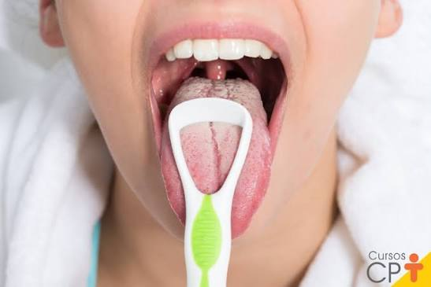
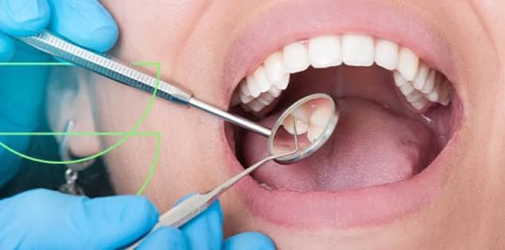
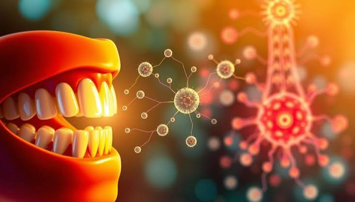

A saúde bucal é um estado de bem-estar físico e mental relacionado à boca,
dentes, gengivas e estruturas associadas. Ela envolve a prevenção, diagnóstico e tratamento
de doenças e condições que afetam a cavidade oral, como cáries, gengivite, periodontite, entre outras.



tambem e sempre importante manter uma boa higiene bucal,
escovando os dentes regularmente, usando fio dental e visitando o
dentista para check-ups regulares. A saúde bucal não apenas afeta a aparência e
a função da boca, mas também pode ter impacto na saúde geral do corpo, pois infecções
bucais podem se espalhar para outras partes do corpo e
contribuir para problemas de saúde sistêmicos.